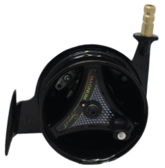
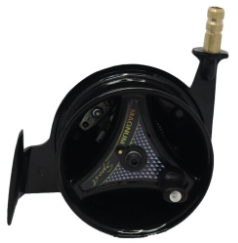

Stock available:3
Centerpin reels are designed for smooth and effortless casting and retrieval, making them ideal for fishing in rivers and streams.
It features a simple design with a large spool that allows for long casts and easy line management.
This center pin reel is made with a aluminium spool. Which means it will last you for many generations to come.
It has a 1:1 gear ratio so that when fighting the fish you will feel the true power of the fish you catch.
This makes it so much more fun to fish with and will give you a fishing exepreince you will never forget.
| Hand direction | Right and Left | Weight | 380g |
|---|---|---|---|
| Gear ratio | 1:1 | Material | Alumnium |
| Type | Magnum Centerpin | Model Number | MGN54C |